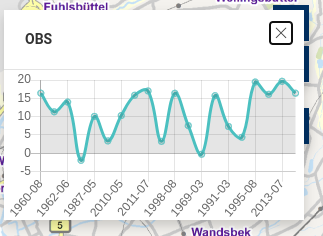

Addons
Mittels eines Addons lässt sich die Funktionalität des Masterportals beliebig erweitern, ohne dass der Core verändert werden muss. Es lassen sich eigenständige Tools und GfiThemes entwickeln, die zu Beginn der Laufzeit importiert werden und fortan wie eigenständige Module funktionieren.
Es empfiehlt sich, die Vue.js devtools zu installieren. Diese bieten u.a. einen Live-Zugriff auf den Store.
Im Rahmen dieses Workshops soll exemplarisch ein custom GFITheme Addon eingebunden und konfiguriert werden.
Addon-Code: https://github.com/terrestris/masterportal-addons/tree/main/simpleLineChart
